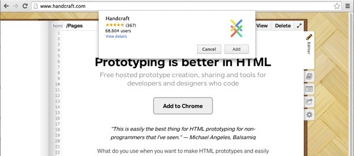
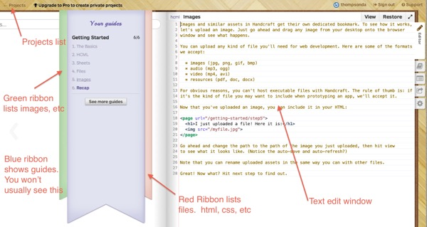
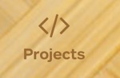

Hosting Setup: Handcraft
Activity Instructions
Estimated Time: 20 minutes
This activity is to help you to get the software and web hosting setup that we will be using this semester.
Step 01
If you haven't yet followed the class software download process review the Setup Software Used in this Class. Download and install the Chrome browser if you do not have it. You will also need a Google account if you do not have one.
Because Handcraft acts as an editor AND your web hosting service, it is the simplest of the "free" services to use. If you have other hosting you would like to use instead that is allowed. You just need to have a URL for your page that you will turn in for your assignments.
Step 02
Open up the Chrome browser on your computer and go to http://www.handcraft.com/. Click on the "Add To Chrome" button then click "Add" again on the popup.

Step 03
The button should have changed to "Open Handcraft" Click it. The first time you open it Google will want you to authenticate and give Handcraft permission to use your Google account. If you are not currently logged into Google you will need to do that, then you can allow Handcraft access.
Step 04
At this point you will see an open Handcraft project with some guides. Refer to the picture to orient yourself to it's interface.

Step 06
Lets make a new project to use for the website you will make this semester in WDD 100. Click "Projects", then on the Add button. Give your project a name and address. After your website is created, it will take you to your new html page that you will use to hand code your website.
Choosing a Name
You will get an opportunity to choose your project name and the URL name. Choose names that will represent you and your website. The Project name can be anything you want, but the Web Address must be unique. You may need to try a few times on the address to find one that is available (If you pick something that is already taken Handcraft will add some numbers on the end)
If you have a hard time finding something unique (and you don't like the extra numbers) you could try something like : semesterlastname (ie w15thompson) to start.
Caution!
Take the time to get something you like. Once you have created your project do not go into the settings and change the URL. Handcraft will let you do it…but it will break the project. If you do need to change the url after you have created any html pages then create a new project with the new URL you would like and copy from the old one.
Step 07
When you are finished for the session you can either log out or just close the website. Anytime you return to Handcraft just log on and you will click on "projects". That will take you to your website that you created before.
If you want to get a better feel for how to use Handcraft, choose the main tutorial.
Step 08
When you are ready to begin your coding experience, choose the editor which is the red ribbon and the pencil on the right. Handcraft starts you with a mostly blank index.html file. Let's write some HTML!
A valid html document will always look something like the HTML below. Enter those lines into your editor then click the "View" button to see what your site looks like.
Step 09
Lets upload an image to include in our site. Uploading images for your pages is accomplished by going to the green ribbon.
Click on the Upload a new file. Then all you have to do is drag a .jpg or .png file to the blue area. Once it is uploaded, you will see the file on the green ribbon, ready to use. You can rename your image by highlighting all that is before the .jpg at the top of the page. You can also see the size of the image.
To include the image on the page add an <img> tag and give it the name and location of the image. In this case the image is in the same place as the html file so we can just put the name. The complete tag would look something like this: (Replace mature_bonsai.jpg with the name of your image.)
<img src="mature_bonsai.jpg" alt="Bonsai Tree" >
Step 10
Preview your site by clicking on the View button. If you leave the tab open with your preview every time you make a change to your html and save it (cmd-s on mac ctrl-s on PC) It will automatically refresh.
When you are asked to submit your URL for an assignment, you need to make sure that you submit the "real" URL while viewing your site in your browser (chrome), not the editor address while in the editor.
THIS IS the correct URL
This is NOT the URL
Happy web site building .....